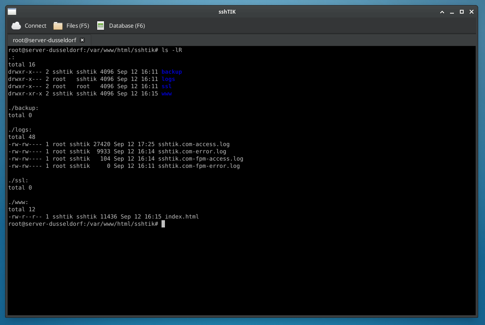
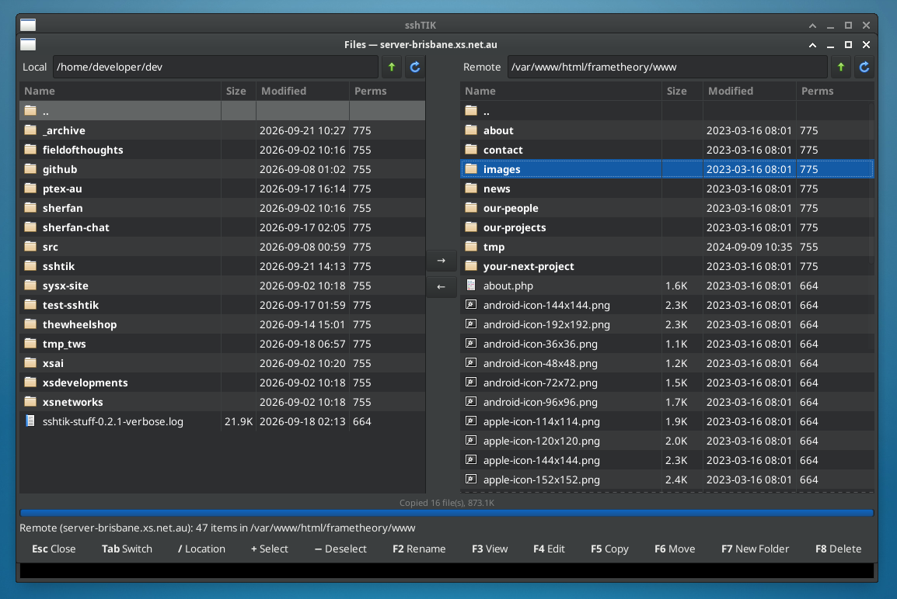
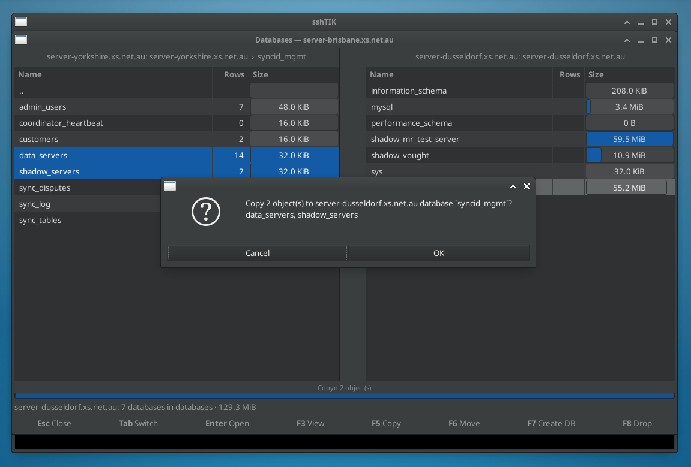
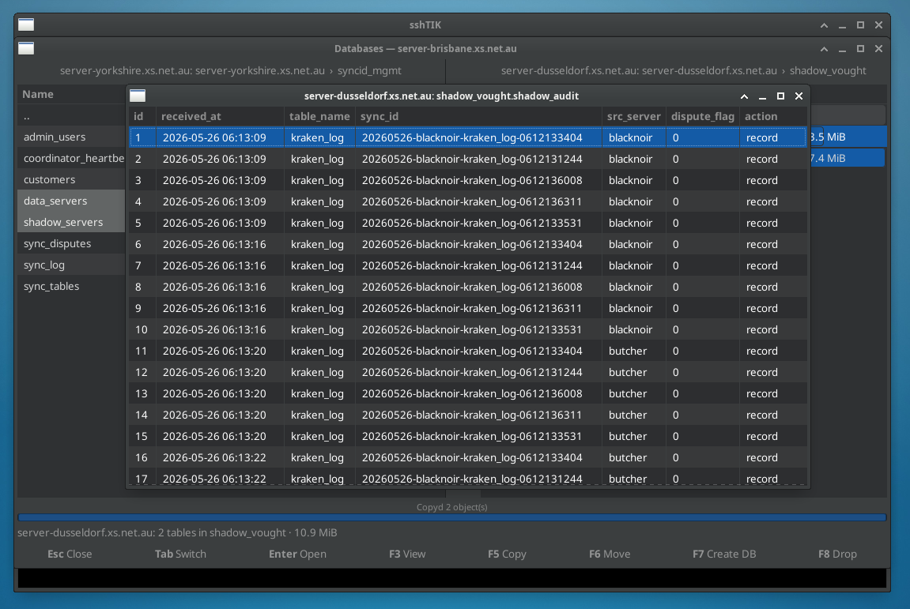
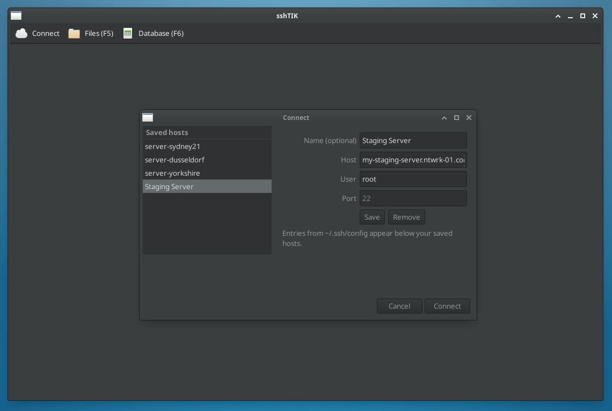

![sshTIK icon: a striped pilotfish wearing goggles]()
sshTIK An SSH terminal that pops open a file manager and a database browser — on the session you already have.
Most of the time sshTIK is just a terminal. You connect, you type, it looks like ssh.
The difference is what happens when you press a function key.
Files
A dual-pane file manager opens over SFTP — the remote side already in your shell's directory, your local machine opposite. Type-aware icons, folders grouped first, three-state column sorting, drag-and-drop, recursive copy and move, rename, chmod, delete. Double-click a remote file to edit it in your local editor; every save uploads.
Database
A two-pane database commander in the same style: the server you're on beside any other host from your SSH config. Copy or move whole tables and entire databases between them (a mysqldump piped straight into mysql), create and drop databases, and open any table's rows — all over the SSH sessions you already have.
Everything rides on the one SSH connection you authenticated with. No second login, no FTP daemon, no tunnels to configure, nothing to install on the server.
See it in action
{kind=link}

ssh you already know.{kind=link}

{kind=link}

server-yorkshire straight into server-dusseldorf.{kind=link}

{kind=link}

~/.ssh/config. Your saved hosts alongside the Host entries you already keep, ready to pick.Install
Linux only for now — it's built on GTK and VTE, the same terminal widget as GNOME Terminal and xfce4-terminal.
# Any distro with Flatpak: grab the .flatpak from the Downloads page, then flatpak install sshtik-*.flatpak # Or from source — Ubuntu / Debian sudo apt install gir1.2-vte-2.91 python3-paramiko python3-gi pipx # Fedora sudo dnf install vte291 python3-paramiko python3-gobject pipx git clone https://github.com/xsDevelopments/sshtik ./sshtik/install.sh sshtik user@host -p 22
Also in the box
- Tabs, saved hosts, and everything in your
~/.ssh/configready to pick from - Key, agent and password authentication
- Right-click copy/paste, Ctrl++/− zoom, window layout remembered
- Works over the same non-standard ports and jump hosts your
sshdoes
How it works
One SSH transport, several channels. The terminal is an interactive shell channel; the file panel is the SFTP
subsystem on the same transport. The helpers learn what you're doing through short exec channels — the shell's
current directory from /proc/<pid>/cwd, the running mysql client's user and host from
its command line. Nothing is scraped off the screen. Either database pane can also point at another host in your
~/.ssh/config and run mysql there over its own hidden session, so a copy between two
servers never leaves the app.